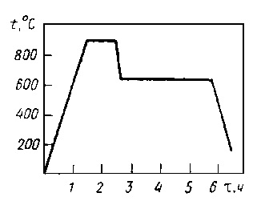

Обрабатываемость резанием характеризуется производительностью резания, усилием резания, качеством полученной поверхности, стойкостью инструмента, видом образующейся стружки и зависит от свойств и структуры обрабатываемого материала. Обычно обрабатываемость оценивают по твердости стали, но этого не достаточно, т.к. обрабатываемость существенно зависит от структуры и субструктуры. Поэтому режимы предварительной термообработки назначают исходя из состава стали и условий резания.
Поковки из низкоуглеродистых сталей хорошо обрабатываются в нормализованном состоянии и после ковки не требуют термообработки. При большом объеме механической обработки поковки из сталей, содержащих до 0,2 %С, рекомендуют подвергнуть нормализации с ускоренным охлаждением. При этом металл несколько упрочняется, что устраняет налипание металла на инструмент и облегчает условия резания.
Поковки из цементуемых сталей 18ХГТ, 25ХГТ, 14ХГНМ, 25ХГМ подвергают изотермическому отжигу или нормализации. Установлено, что наилучшая обрабатываемость резанием достигается при однородной феррито–перлитной структуре с определенным соотношением твердости структурных составляющих, т.е. твердость феррита должна составлять 1400–2000 МПа, а твердость перлита не более 3000 МПа. Если твердость выше этих пределов, то увеличивается износ инструмента, а если ниже – снижается чистота поверхности.
Не допускается наличие в структуре продуктов промежуточного превращения с твердостью выше 3500 МПа. Такую структуру обеспечивает изотермический отжиг по следующему режиму.
Такая обработка обеспечивает оптимальную обрабатываемость. Температура аустенитизации составляет 870–920 °С в зависимости от марки, выдержка около 1 ч. Завышение температуры аустенитизации повышает устойчивость аустенита и не позволяет получить распад по перлитной ступени при изотермической выдержке. Охлаждение от температуры аустенитизации должно быть ускоренным, обычно обдувом горячего воздуха, т.к. при замедленном охлаждении возникает полосчатая феррито–перлитная структура. Кроме того, при замедленном охлаждении увеличивается разность между твердостью феррита и перлита. Изотермическая выдержка производится при температурах 620–660 °С. Длительность должна быть достаточной для завершения распада аустенита и начала коагуляции карбидов, т.е. для среднелегированных сталей 12Х2Н4, 12ХН3А около 4 ч, а для сталей типа 20ХГНМ около 2 ч.
Ввиду трудоемкости такой режим используют для деталей с большим объемом резания (шестерни, шлицевые валы). Также рекомендуется проводить изотермический отжиг для поковок из углеродистых сталей в сечениях до 12 мм, а поковок из легированных сталей – до 40 мм. Для поковок из цементуемых сталей широко применяют нормализацию, хотя структура и свойства по сечению при нормализации менее однородны, но обеспечивается приемлемая обрабатываемость. Для сталей с высокой устойчивостью переохлажденного аустенита (12ХН3А, 20ХГТ) после нормализации проводят отпуск при температурах 600–700 °С, причем твердость не должна превышать 240 НВ.
Поковки из углеродистых и низколегированных сталей, содержащих 0,3–0,6 %С, типа 40, 45, 40Х, 40ХН для улучшения обрабатываемости подвергают полному отжигу или нормализации. Для легированных сталей иногда дополнительно проводят отпуск. Твердость не должна превышать 230 НВ для углеродистых сталей и 240–250 НВ для легированных. При больших объемах резания также может применяться изотермический отжиг. Поковки из инструментальных и подшипниковых сталей подвергают отжигу на зернистый перлит.
Для высоколегированных сталей отжиг с медленным охлаждением в печи не дает полного распада аустенита в перлитной области и нужной твердости. Поэтому применяют более сложную обработку с нагревом до 950 °С для сталей с Мо и V или 850 °С для сталей с Сr и Ni с охлаждением в печи до температуры 300 °С с последующим отпуском при 600–700 °С. Для крупных заготовок такой отжиг проводят дважды, причем температура нагрева при втором отжиге на 30–50 °С ниже.